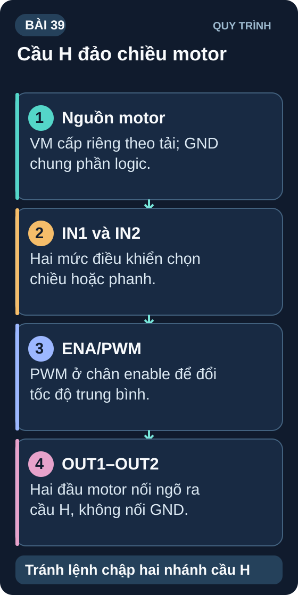
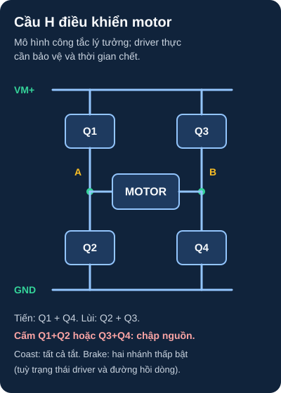

H-Bridge & Điều Khiển Motor DC 2 Chiều
L298N, L9110S và TB6612FNG — điều khiển tốc độ PWM và đảo chiều motor DC — nền tảng của robot xe và cơ cấu truyền động.
- Hiểu H-Bridge là gì — tại sao cần để đảo chiều motor
- Nguyên lý hoạt động H-Bridge: 4 MOSFET/BJT tạo "chữ H"
- Kết nối và điều khiển L298N — module phổ biến nhất, 2A/kênh
- Điều khiển tốc độ PWM kết hợp với chân ENA/ENB
- Sử dụng L9110S module (nhỏ, rẻ, 800mA) cho motor nhỏ
- Phân biệt L298N vs TB6612FNG vs DRV8833 — khi nào dùng gì
- Dự án: Robot xe 2 bánh tự điều khiển với tránh vật cản ultrasonic
- Hiểu lý do L298N nóng và cách giảm thiệt (heat sink, TB6612FNG)

1. H-Bridge — Mạch cầu điều khiển chiều dòng

Đọc mô tả sơ đồ D39-1 bằng chữ
VM+ cấp cho đầu trên của Q1 và Q3. Q1–Q2 là nhánh trái, Q3–Q4 là nhánh phải; hai đầu motor A và B ở giữa hai nhánh. Q1 và Q4 đóng cho dòng đi từ A qua motor đến B; Q2 và Q3 đóng cho dòng đảo chiều. Q1 cùng Q2 hoặc Q3 cùng Q4 không được đóng đồng thời vì ngắn mạch VM+ xuống GND. Mọi công tắc tắt là coast; đóng cả hai nhánh dưới có thể tạo brake, tùy driver và đường tuần hoàn dòng. Mạch thực cần driver và thời gian chết khi chuyển trạng thái.
2. Bảng điều khiển L298N
| IN1 | IN2 | ENA (PWM) | Motor A |
|---|---|---|---|
| HIGH | LOW | HIGH (hoặc PWM) | Quay thuận (tốc độ theo PWM) |
| LOW | HIGH | HIGH | Quay ngược |
| LOW | LOW | HIGH | Hãm nhanh (hai đầu motor cùng mức LOW) |
| HIGH | HIGH | HIGH | Hãm nhanh (hai đầu motor cùng mức HIGH) |
| X | X | LOW | Thả trôi (coast/free running); ngõ ra vô hiệu |
Theo bảng điều khiển L298 của ST, khi ENA=HIGH và IN1=IN2 thì hãm nhanh; khi ENA=LOW thì ngõ ra thả trôi. Kiểm tra module thực tế có diode hồi dòng cho tải cảm và nguồn logic/motor phù hợp.
Đoạn mã dưới đây minh họa bảng trạng thái trên Arduino Uno hoặc mô phỏng logic; chưa có mã/revision module L298N, motor và nguồn để chạy trên robot thật. Trước khi lắp cần kiểm pinout module, diode hồi dòng, dòng kẹt trục, sụt áp/nhiệt, dòng nguồn và hành vi an toàn khi reset.
// Robot 2 bánh — ví dụ chân và analogWrite cho Arduino Uno
// Kết nối: Motor A: IN1=5, IN2=4, ENA=3(PWM)
// Motor B: IN3=9, IN4=8, ENB=6(PWM)
const int IN1=5, IN2=4, ENA=3; // Motor Trái
const int IN3=9, IN4=8, ENB=6; // Motor Phải
void motorLeft(int speed) {
bool fwd = (speed >= 0);
analogWrite(ENA, abs(speed)); // 0–255
digitalWrite(IN1, fwd ? HIGH : LOW);
digitalWrite(IN2, fwd ? LOW : HIGH);
}
void motorRight(int speed) {
bool fwd = (speed >= 0);
analogWrite(ENB, abs(speed));
digitalWrite(IN3, fwd ? HIGH : LOW);
digitalWrite(IN4, fwd ? LOW : HIGH);
}
void forward(int spd) { motorLeft(spd); motorRight(spd); }
void backward(int spd){ motorLeft(-spd); motorRight(-spd); }
void turnLeft(int spd){ motorLeft(-spd); motorRight(spd); }
void turnRight(int spd){ motorLeft(spd); motorRight(-spd); }
void stop() { motorLeft(0); motorRight(0); } // EN=0: coast
void setup() {
for (int p : {IN1,IN2,IN3,IN4}) pinMode(p, OUTPUT);
for (int p : {ENA,ENB}) pinMode(p, OUTPUT);
}
void loop() {
forward(200); delay(2000);
turnLeft(150); delay(500);
forward(200); delay(2000);
stop(); delay(1000);
}
L298N dùng transistor lưỡng cực nên sụt áp và tổn thất nhiệt có thể lớn; ví dụ giả định V_drop=2V ở 1A thì P_heat=2W cho một kênh. TB6612FNG dùng MOSFET và thường có sụt áp thấp hơn, nhưng datasheet Toshiba nêu mức điển hình và tối đa phụ thuộc dòng, điện áp, nhiệt độ. Không giả định sụt áp luôn dưới 0,5V hoặc không cần tản nhiệt: tính công suất cả hai kênh, nhiệt độ môi trường và giới hạn của chính carrier trước khi chọn driver.
1: P_heat mỗi kênh = V_drop × I = 2V × 0,8A = 1,6W. Tổng 2 kênh = 3,2W. Cần heat sink khi chạy liên tục. Bộ nhớ: nhiệt độ tăng ~30°C/W với heat sink nhỏ → 3,2W có thể nóng 96°C nếu không có tản nhiệt!
2: void ramp(int from, int to, int durationMs) { int steps = abs(to-from); if(steps==0)return; int delayPerStep = durationMs/steps; int dir = (to>from)?1:-1; for(int s=from; s!=to; s+=dir){ motorLeft(s); motorRight(s); delay(delayPerStep); } }
3: Q1 (VCC→motor+) và Q2 (motor+→GND) cùng ON = short circuit trực tiếp VCC→GND qua 2 transistor. Dòng ngắn mạch rất lớn → hỏng IC ngay lập tức (crowbar). Đây là lý do H-bridge hardware có dead-time (thời gian chết) giữa 2 lần bật switch để đảm bảo switch trước đã tắt hoàn toàn.